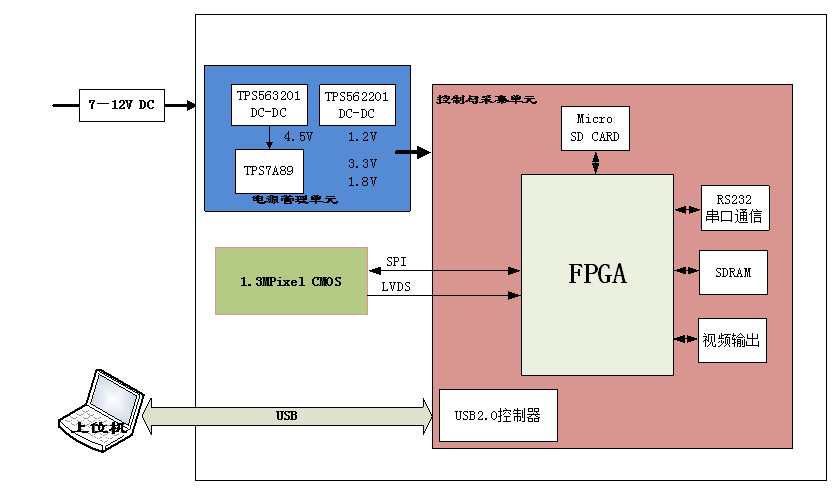

背景知识：：
1280*1024 分辨率说的是显示器上的像素点数量，横向 1280 个像素点，纵向 1024 个像素点。像素点合计 1280*1024=1310720 个像素点。
24 位真彩色说的是每个像素点表示颜色的方法采用 RGB 三原色表示法，即每个像素点用红、绿、蓝三种颜色的混杂量调制出不同颜色，R、G、B 分辨用 8 位二进制数字表示颜色的多少。即，一个像素点8*3=24位
亦即 1280*1024 的单帧画面，无压缩的数据量应为：
像素点数量=1280*1024=1310720 个像素点
单像素点大小=8*3=24 位/个像素点
亦即 1280*1024 的单帧画面，无压缩的数据量应为：
像素点数量=1280*1024=1310720 个像素点
单像素点大小=8*3=24 位/个像素点
单帧画面总大小=1310720*24=31,457,280 位
1 字节=8 位 ==》
单帧画面总大小=31,457,280/8=3932160 字节=3840 KB=3.75 MB
电子学系统方案设计
根据多光谱相机的技术规格和任务要求，电子学硬件系统由电源管理单元、控制采集单元、FLASH存储器、MicroSD存储器、USB2.0控制与传输单元、RS232通信单元组成，结构如图1所示。

图1 多光谱相机电子学系统组成
控制与采集单元的主要功能包括：
- 通过SPI与CMOS探测器通信，加载CMOS控制参数并回读，接收CMOS探测器的LVDS图像信号；
- 将图像信号进行格式处理后，存储至MicroSD卡；
- 通过USB接口与上位机进行通信，接收上位机的控制参数，同时将参数和图像数据传送至上位机（实时传输探测器视频图像 ）
- 通过RS232接口与GPS模块通信，并将位置与姿态信息与图像打包，存储至MicroSD卡；（问一嘴）
探测器选型：
拟选用ON Semiconductor公司的PYTHON系列 130万像素彩色CMOS图像探测器NOIP3SE1300A−QDI
所选探测器为2路LVDS输出。
Parameter Specification | 1280 (H) x 1024 (V) |
USB控制器设计：
1.本设计选用CYPRESS公司的USB控制芯片CY7C68013。
可使用4 种USB 传输方式：控制传输、中断传输、批量传输和同步传输。


芯片固件是存储在主机上而不是在芯片。
2.CY7C68013A 特点：
程序可通过下面方式下载：
－ 通过USB 口下载
－ 通过外部E2PROM 装载
－ 外界存储设备(只有128 引脚封装支持)
3、通用可编程接口GPIF，GPIF 是FX2 一个重要技术：
－可设置为主从模式，主模式下可对外部FIFO、存储器、ATA接口设备进行高速读写操作，从模式下外部主控器(如DSP,MCU)可把GPIF 端口当作FIFO 进行高速读写操作。
－ 支持与外设通过并行8 位或16 总线传输。
－ 支持通过GPIF 编程工具编程，灵活产生各种波形。
－ 支持多CTL 输出和多RDY 输入。
4、增强工业级8051 内核，特点有
－ 支持48M 时钟
－ 4 个时钟指令周期，在时钟为48M 时，单指令执行时间为83.3ns
－ 两个UART
－ 三个TIMER
－ 多中断系统
－ 多数据指针
5、3.3V 工作电压，低功耗，在任何工作模式下电流小于85mA。
6、智能串行接口引擎(SIE)。
7、USB 中断矢量。
8、100KHZ 或400KHZ I2C 接口。
9、4 个集成FIFO
－ 低成本与外设实现“胶连接”
－ 自动实现从16 位FIFO 转换
－ 支持主从工作模式
－ FIFO 支持内外时钟和同步数据触发
－ 轻松实现与ASIC,DSP 连接
10、包括40 多个通用IO 端口。
11、4 中可选封装－56 引脚SSOP 和QFN，100 引脚TQFP 和128 引脚TQFP。
图5 CY7C68013芯片框架图
RS232通信接口设计：
RS-232通信接口用于接收GPS模块发送的位置坐标信息和无人机姿态信息，并将其与图像数据打包存储至SD卡中。接口芯片选择型号为MAX3228E的RS232收发芯片。
MicroSD卡电路设计：
MicroSD卡有8个引脚和2种操作模式，其引脚排序和不同模式下定义的如图8所示。
图8 MicroSD卡引脚定义
SD 卡主要引脚和功能为：
CLK：时钟信号，每个时钟周期传输一个命令或数据位，频率可在0～25MHz之间变化，SD卡的总线管理器可以不受任何限制的自由产生0～25MHz 的频率；
CMD：双向命令和回复线，命令是一次主机到从卡操作的开始，命令可以是从主机到单卡寻址，也可以是到所有卡；回复是对之前命令的回答，回复可以来自单 卡或所有卡；
DAT0～3：数据线，数据可以从卡传向主机也可以从主机传向卡。
SD卡以命令形式来控制SD卡的读写等操作。可根据命令对多块或单块进行读写操作。在SPI模式下其命令由6个字节构成，其中高位在前。
一般低速卡通常支持0~400Kbs 数据传输率，采用SPI和1位SD传输模式。高速卡支持0~100Mbs数据传输率，采用4位SD传输模式。本应用中一帧完整数据约为2.6MB，因此需采用4位SD传输模式。
FLASH电路设计（术语有毛病）：
由于FPGA要完成CMOS视频图像采集和图像格式的转换算法(跑程序所占用的内存)，FPGA内部RAM容量有限（2586Kb），故本设计选用Micron公司的SDRAM存储器MT48LC16M16A2FG，形成数据缓存单元（暂存图像数据，但是本方案采用DDR3内存缓存方式）。